PRACTICA 3: SEÑALES EN TIEMPO CONTINUO
Contents
Integrantes
- Barrera Martinez Paola Angelica
- Espino Chavez Brandon Daniel
- Gonzalez Lopez Dani
- Villavicencio Salinas Miguel Angel
- Zetina Arellano Luis Enrique
Objetivos
- Manipulación básica de MATLAB
- Gráficas de señales reales y complejas continuas
- Transformación de señales continuas (escalamientos y traslaciones)
- Calculo de energía y potencia de señales continuas
Introduccion.
Se investigo cómo se grafica con python y con esto se resolvió el problema 4. Este es el resultado obtenido en python
PAYTHON
Programar graficas en paython es muy similar a graficae en MATLAB como se puede obserbar en la imagen del codigo
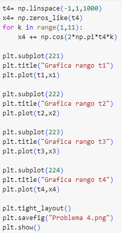
De esta forma es como se observan las graficas en python

Desarrollo
% Metodos para trabajar señales dentro de MATLAB
EJERCICIO 1
FUNCIONES ANONIMAS
Las funciones anónimas proveen una representacion simbolica de una función definida en operadores, funciones u otras funciones anonimas de MATLAB.
Definimos una funcion exponencial senusoidal:
f = @ (t) exp(-t).* cos(2*pi*t);
Usamos el simbolo @ para identificar a la expresion como una funcion anonima, a la que se le asigna el nombre de f. Los parentesis seguidos de @ identifican la variable independiente o argumento de entrada.
Para evaluar a t en f(t), asignamos como t=0; f(t)
Vectores de entrada
Los vectores de entrada permiten la evaluacion de multiples valores simultanemamente, por ejemplo:
t=(-2:0.01:2);f(t);
Graficación
Para graficar la señal anterior, utilizamos los siguientes comandos
plot(t,f(t)); xlabel('t'); ylabel('f(t)'); grid;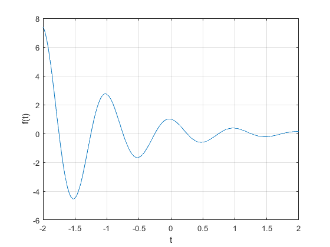
OPERADORES RELACIONALES Y ESCALON UNITARIO
Los operadores relacionales en MATLAB comparan dos elementos, y tenemos 6 operadores: ,,<=,>=,== and ~=.
El escalon unitario u(t) surge para muchas situaciones practicas, en este caso, definimos al escalon como
u= @(tu) 1.0.*(tu>=0);
Definimos el vector de entrada y graficamos la señal
tu = (-2:0.01:2); plot(tu,u(tu)); xlabel('t'); ylabel('u(t)'); axis ([-2 2 -0.1 1.1]);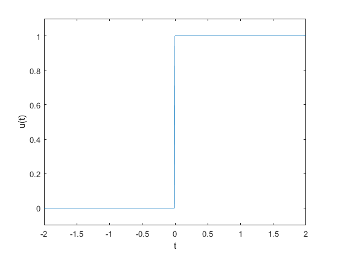
Podemos combinar los operadores relacionales con el logico AND (&), OR (|) y negacion(~). Haciendo una representación gráfica tenemos:
p=@(to) 1.0.*((to>=0)&(to<1)); to=(-1:0.01:2); plot(to,p(to)); xlabel('t'); ylabel('p(t)=u(t)-u(t-1)'); axis([-1 2 -0.1 1.1])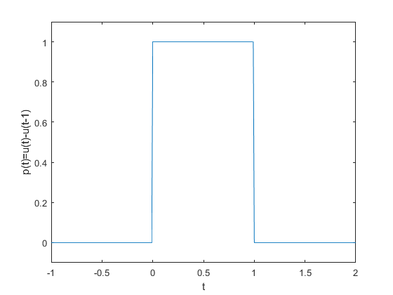
OPERADORES DE VISUALIZACION EN UNA VARIABLE INDEPENDIENTE
Comúnmente se encuentran dos operaciones sobre la variable independiente de una función: desplazamiento y escalada
Consideramos la funcion g(t)= f(t) u(t)= e-t Cos(2*pi*t) u(t).
Para definirla en MATLAB tenemos:
g = @(t) f(t).*u(tu);
Ahora definimos constantes para el desplazamiento y escalada de la funcion; consideramos un factor de compresion de 2 y un desplazaminto de 1 unidad a la izquierda, por tanto
tv= (-2:0.01:2); plot(tv,g(2*t+1)); xlabel('t'); ylabel('g(2t+1)'); grid;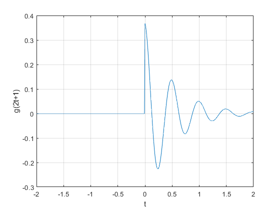
Otros ejemplos son:
Para una inversion horizontal y desplazamiento de una unidad a la izquierda, tenemos:
plot(tv,g(-t+1)); xlabel('t'); ylabel('g(-t+1)'); grid;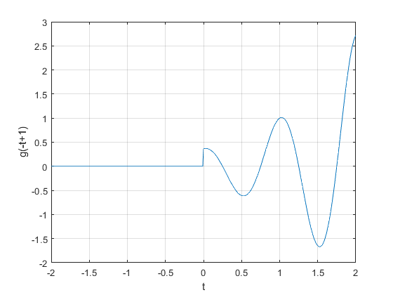
Si sumamos las dos transformaciones anteriores, h(t)= g(2*t+1)+g(-t+1), tenemos:
plot(tv,g(2*t+1)+g(-t+1)); xlabel('t'); ylabel('h(t)'); grid;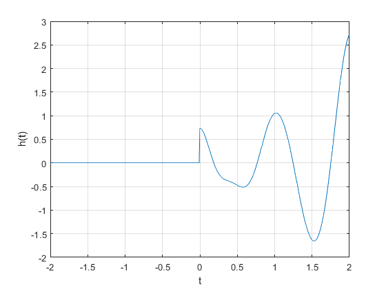
INTEGRACION NUMERICA Y ESTIMACION DE LA SEÑAL DE ENERGÍA
Para diversos cálculos nos ayudamos de la integración, y aunque ésta parezca simple la integración numérica proporciona una buena manera de verifcar resultados analíticos.
Para ejemplificar, consideramos una señal simple: x(t)= e-t(u(t)-u(t-1))
x= @(te) exp(-te).*((te>=0)&(te<1)); te= (0:0.01:1);
Definimos el valor de la energía
E_x= sum(x(te).*x(te)*0.01);
EJERCICIO 2
Para la señal x(t), se bosquejan cinco diferentes transformaciones.
- x(t-4)
- x(t/1.5)
- x(-t)
- x(2t-4)
- x(2-t)
La función original x(t), es:
t1=(-10:0.1:10);
f1= @(t1) -t1.*((t1>=-4)&(t1<=0));
f2= @(t1) t1.*((t1>=0)&(t1<=2));
f3=@(t1) f1(t1)+f2(t1);
plot(t1,f3(t1));
axis([-5 3 -1 4.5]);
xlabel('t'); ylabel('x(t)'); grid;
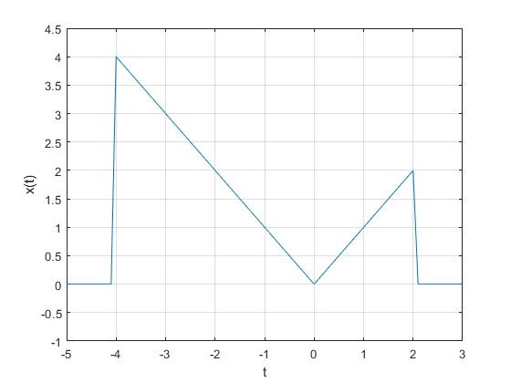 Ahora gráficamos cada una de las transformaciones propuestas
Para a) x(t-4)
plot(t1, f3(t1-4),'r'); xlabel('t'); ylabel('x(t-4)'); grid; axis ([-1 7 -0.5 4.5]);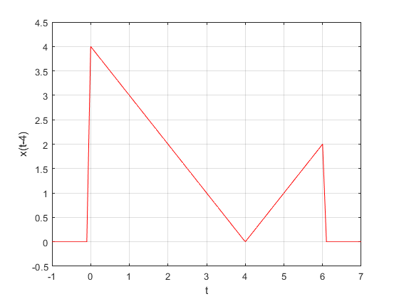
Para b) x(t/1.5)
plot(t1, f3(t1/1.5),'m'); xlabel('t'); ylabel('x(t/1.5)'); grid; axis ([-8 5 -1.5 4.5]);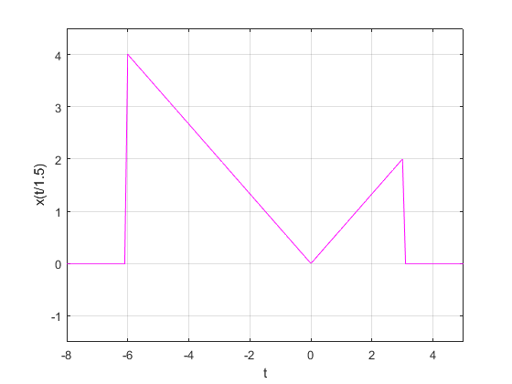
Para c) x(-t)
plot(t1, f3(-t1),'k'); xlabel('t'); ylabel('x(-t)'); grid; axis ([-3 6 -0.5 4.5]);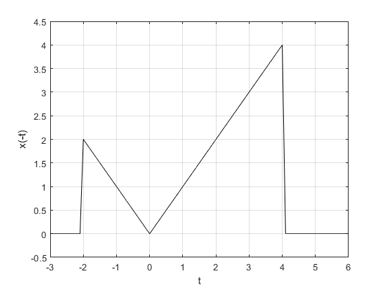
Para d) x(2*t-4)
plot(t1, f3(2*t1-4),'g'); xlabel('t'); ylabel('x(2t-4)'); grid; axis ([-1 5 -0.5 4.5]);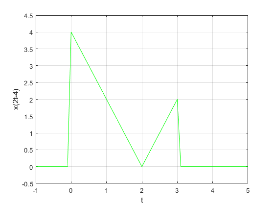
Para e) x(2-t)
plot(t1, f3(2-t1),'c'); xlabel('t'); ylabel('x(2-t)'); grid; axis ([-3 9 -0.5 4.5]);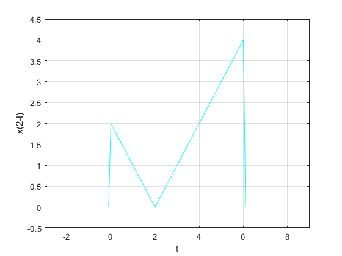
EJERCICIO 3
Resuelve el problema 1.11-1, los ejes deben mostrarse en el origen además de la edición de tu preferencia.
Proporcionar código en MATLAB y resultados que tracen la porción impar xo(t) de la función x(t)=2^−t cos(2πt)u(t−π ) en un intervalo de longitud adecuada utilizando un número adecuado de puntos.
Se resolvio este problema del libro de Lathi (versión de clase).
Definición de la función x(t)
t = linspace(0, 12, 1000); % Definimos el intervalo de tiempo u = @(t) (t >= 0); % Función escalón unitario x = @(t) 2.^(-t) .* cos(2*pi*t) .* u(t - pi); % Definimos la función x(t)
Calculamos la porción impar xo(t)
xo = @(t) 0.5 * (x(t) - x(-t)); % Porción impar de x(t)
Gráfico de xo(t)
figure; plot(t, xo(t), 'b', 'LineWidth', 2); grid on; xlabel('t'); ylabel('xo(t)'); title('Porción impar de x(t)'); axis([-2 4 -1 1]); % Establecemos límites de los ejes ax = gca; % Obtenemos los ejes actuales ax.XAxisLocation = 'origin'; % Movemos el eje x al origen ax.YAxisLocation = 'origin'; % Movemos el eje y al origen ax.Box = 'off'; % Quitamos el recuadro alrededor del gráfico ax.XAxis.TickLength = [0.02 0.02]; % Longitud de las marcas en el eje x ax.YAxis.TickLength = [0.02 0.02]; % Longitud de las marcas en el eje y ax.FontSize = 12; % Tamaño de fuente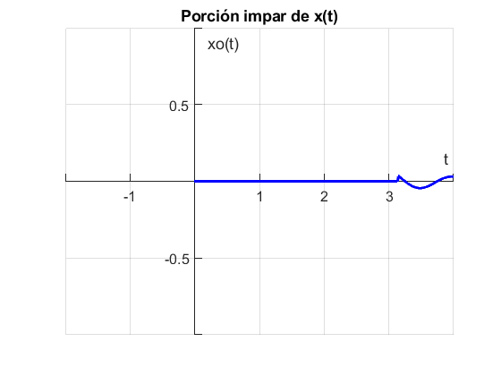
EJERCICIO 4
Se resolvio y grafico una sumatoria por medio de MATLAB y paython, la sumatoria es:
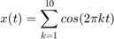
MATLAB Se construyeron 4 graficas para 4 diferentes rangos de "t"
Subgráfico 1 Para el rango t1
t1 = linspace(-10,10,100); % Rango 1 de -10 a 10 de 1 en 1 x1 = linspace(0,0,100); for k = 1:10 x1= x1 + cos(2*pi*t1*k); end subplot(2, 2, 1); plot(t1, x1); title("Grafica Rango t1") plano= gca; plano.XAxisLocation = "origin"; plano.YAxisLocation = "origin"; plano.Box = "off"; grid on;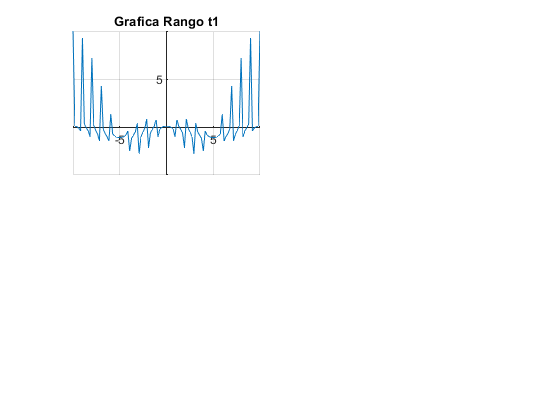
Subgráfico 2 Para el rango t2
t2 = linspace(-5,5,100); % Rango 2 de -5 a 5 de 1 en 1 x2 = linspace(0,0,100); for k = 1:10 x2= x2 + cos(2*pi*t2*k); end subplot(2, 2, 2); plot(t2, x2); title("Grafica Rango t2") plano = gca; plano.XAxisLocation = "origin"; plano.YAxisLocation = "origin"; plano.Box = "off"; grid on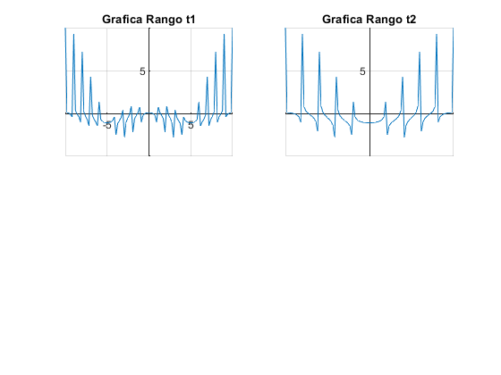
Subgráfico 3 Para el rango t3
t3 = linspace(0,20,100); % Rango 3 de 0 a 20 de 1 en 1 x3 = linspace(0,0,100); for k = 1:10 x3= x3 + cos(2*pi*t3*k); end subplot(2, 2, 3); plot(t3, x3); title("Grafica Rango t3") plano = gca; plano.XAxisLocation = "origin"; plano.YAxisLocation = "origin"; plano.Box = "off"; grid on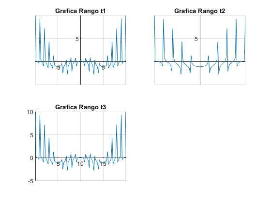
Subgráfico 4 P+ara el rango t4
t4 = linspace(-1, 1, 1000); % Rango 4 de -1 a 1 con 1000 elementos x4 = linspace(0,0,1000); for k = 1:10 x4= x4 + cos(2*pi*t4*k); end subplot(2, 2, 4); plot(t4, x4); title("Grafica Rango t4") plano = gca; plano.XAxisLocation = "origin"; plano.YAxisLocation = "origin"; plano.Box = "off"; grid on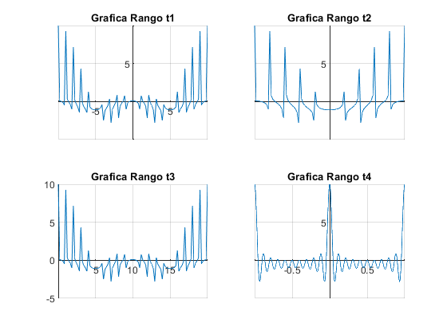
EJERCICIO 5
Declaracion de funciones anonimas
u = @(t) 1.0*(t>=0); t = -10:.001:10; x = @(t) exp(t*(1+2j*pi)).*u(-t); % Graficas para distintos valores de a(0.5, 1, 2) %Inciso a) subplot(1,3,1); plot(real(x(t)),imag(x(0.5*t)),'k-'); grid on xlabel('Re(x(t))'); ylabel('Im(x(0.5t))'); axis([-1 1 -1 1]); subplot(1,3,2); plot(real(x(t)),imag(x(t)),'k-'); grid on xlabel('Re(x(t))'); ylabel('Im(x(t))'); axis([-1 1 -1 1]); subplot(1,3,3); plot(real(x(t)),imag(x(2*t)),'k-'); grid on xlabel('Re(x(t))'); ylabel('Im(x(2t))'); axis([-1 1 -1 1]);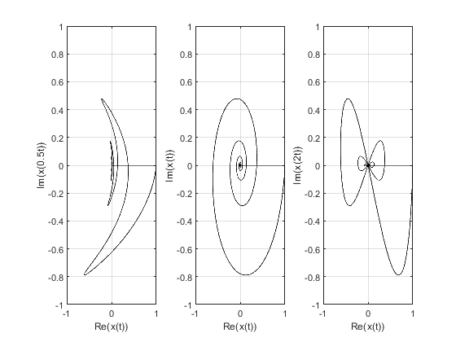
Declaracion de y(t) y su grafica
%Inciso b) y = @(t) real(2*x((-5-t)/2)); figure; plot(t,y(t),'k-'); axis([-10 10 -3 3]); grid on; xlabel('t'); ylabel( 'y(t)'); set(gca,'xtick',-10:5:10,'ytick',-2:0.5:2);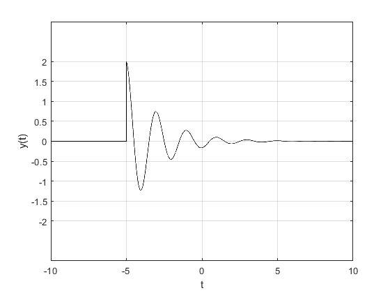
Usando integracion numerica para el calculo de enrgia de x(t)
%Inciso c)
x2 = @(t) x(t).*conj(x(t)); Ex = integral(x2,-100,0);
usando integracion numerica para el calculo de energia de y(t)
% Inciso d)
y2 = @(t) y(t).*conj(y(t));
Ey = integral(y2,-5,100);
Grafica de x(t) en [-10,10]
% Inciso e) figure; plot(t,x(t),'k-'); grid on
Warning: Imaginary parts of complex X and/or Y arguments ignored.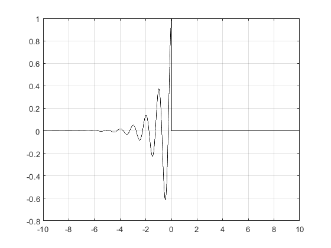